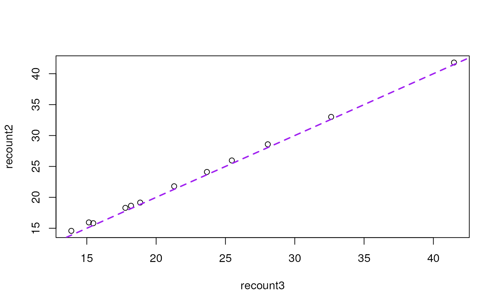

As described in the recount workflow, the counts provided by the recount2
project are base-pair counts. You can scale them using transform_counts()
or compute the read counts using the area under coverage information (AUC).
compute_read_counts(
rse,
round = TRUE,
avg_mapped_read_length = "recount_qc.star.average_mapped_length"
)Arguments
- rse
A RangedSummarizedExperiment-class created by
create_rse().- round
A
logical(1)specifying whether to round the transformed counts or not.- avg_mapped_read_length
A
character(1)specifying the metdata column name that contains the average fragment length after aligning. This is typically twice the average read length for paired-end reads.
Value
A matrix() with the read counts. By default this function uses
the average read length to the QC annotation.
Details
This function is similar to
recount::read_counts(use_paired_end = TRUE, round = TRUE) but more general
and with a different name to avoid NAMESPACE conflicts. Note that the default
value of round is different than in recount::read_counts(). This
was done to match the default value of round in transform_counts().
References
Collado-Torres L, Nellore A and Jaffe AE. recount workflow: Accessing over 70,000 human RNA-seq samples with Bioconductor version 1; referees: 1 approved, 2 approved with reservations. F1000Research 2017, 6:1558 doi: 10.12688/f1000research.12223.1.
See also
Other count transformation functions:
compute_scale_factors(),
is_paired_end(),
transform_counts()
Examples
## Create a RSE object at the gene level
rse_gene_SRP009615 <- create_rse_manual("SRP009615")
#> 2023-01-11 17:45:57 downloading and reading the metadata.
#> 2023-01-11 17:45:57 caching file sra.sra.SRP009615.MD.gz.
#> 2023-01-11 17:45:58 caching file sra.recount_project.SRP009615.MD.gz.
#> 2023-01-11 17:45:59 caching file sra.recount_qc.SRP009615.MD.gz.
#> 2023-01-11 17:45:59 caching file sra.recount_seq_qc.SRP009615.MD.gz.
#> 2023-01-11 17:46:00 caching file sra.recount_pred.SRP009615.MD.gz.
#> 2023-01-11 17:46:00 downloading and reading the feature information.
#> 2023-01-11 17:46:01 caching file human.gene_sums.G026.gtf.gz.
#> 2023-01-11 17:46:02 downloading and reading the counts: 12 samples across 63856 features.
#> 2023-01-11 17:46:02 caching file sra.gene_sums.SRP009615.G026.gz.
#> 2023-01-11 17:46:02 constructing the RangedSummarizedExperiment (rse) object.
colSums(compute_read_counts(rse_gene_SRP009615)) / 1e6
#> SRR387777 SRR387778 SRR387779 SRR387780 SRR389079 SRR389080 SRR389081 SRR389082
#> 21.29962 23.66484 32.62525 25.46085 41.48717 28.05485 17.78092 15.46669
#> SRR389083 SRR389084 SRR389077 SRR389078
#> 18.84982 18.18674 13.88166 15.14785
## Create a RSE object at the gene level
rse_gene_DRP000499 <- create_rse_manual("DRP000499")
#> 2023-01-11 17:46:03 downloading and reading the metadata.
#> 2023-01-11 17:46:03 caching file sra.sra.DRP000499.MD.gz.
#> 2023-01-11 17:46:04 caching file sra.recount_project.DRP000499.MD.gz.
#> 2023-01-11 17:46:05 caching file sra.recount_qc.DRP000499.MD.gz.
#> 2023-01-11 17:46:06 caching file sra.recount_seq_qc.DRP000499.MD.gz.
#> 2023-01-11 17:46:06 caching file sra.recount_pred.DRP000499.MD.gz.
#> 2023-01-11 17:46:06 downloading and reading the feature information.
#> 2023-01-11 17:46:07 caching file human.gene_sums.G026.gtf.gz.
#> 2023-01-11 17:46:08 downloading and reading the counts: 21 samples across 63856 features.
#> 2023-01-11 17:46:08 caching file sra.gene_sums.DRP000499.G026.gz.
#> 2023-01-11 17:46:09 constructing the RangedSummarizedExperiment (rse) object.
colSums(compute_read_counts(rse_gene_DRP000499)) / 1e6
#> DRR001622 DRR001623 DRR001624 DRR001625 DRR001626 DRR001627 DRR001628 DRR001629
#> 10.952140 7.995718 11.874082 NaN 7.518984 11.272031 53.412769 27.539984
#> DRR001630 DRR001631 DRR001632 DRR001633 DRR001634 DRR001635 DRR001636 DRR001637
#> 27.721930 35.301338 48.673389 20.585057 35.074474 31.622335 34.844632 46.270835
#> DRR001638 DRR001639 DRR001640 DRR001641 DRR001642
#> 31.505395 26.991040 18.916860 17.788569 25.389886
## You can compare the read counts against those from recount::read_counts()
## from the recount2 project which used a different RNA-seq aligner
## If needed, install recount, the R/Bioconductor package for recount2:
# BiocManager::install("recount")
recount2_readsums <- colSums(assay(recount::read_counts(
recount::rse_gene_SRP009615
), "counts")) / 1e6
#> Setting options('download.file.method.GEOquery'='auto')
#> Setting options('GEOquery.inmemory.gpl'=FALSE)
recount3_readsums <- colSums(compute_read_counts(rse_gene_SRP009615)) / 1e6
recount_readsums <- data.frame(
recount2 = recount2_readsums[order(names(recount2_readsums))],
recount3 = recount3_readsums[order(names(recount3_readsums))]
)
plot(recount2 ~ recount3, data = recount_readsums)
abline(a = 0, b = 1, col = "purple", lwd = 2, lty = 2)

## Repeat for DRP000499, a paired-end study
recount::download_study("DRP000499", outdir = tempdir())
#> 2023-01-11 17:46:14 downloading file rse_gene.Rdata to /tmp/RtmpUobOFE
load(file.path(tempdir(), "rse_gene.Rdata"), verbose = TRUE)
#> Loading objects:
#> rse_gene
recount2_readsums <- colSums(assay(recount::read_counts(
rse_gene
), "counts")) / 1e6
recount3_readsums <- colSums(compute_read_counts(rse_gene_DRP000499)) / 1e6
recount_readsums <- data.frame(
recount2 = recount2_readsums[order(names(recount2_readsums))],
recount3 = recount3_readsums[order(names(recount3_readsums))]
)
plot(recount2 ~ recount3, data = recount_readsums)
abline(a = 0, b = 1, col = "purple", lwd = 2, lty = 2)